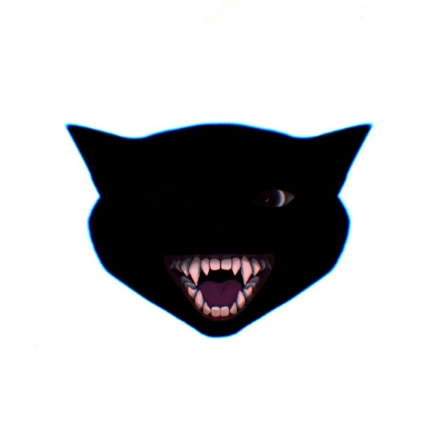
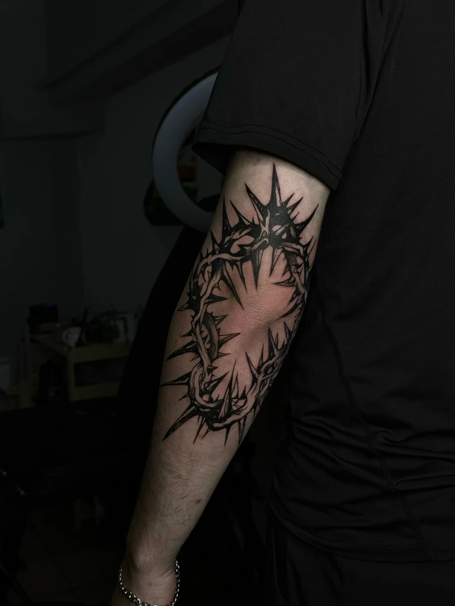

Обсуждаем идею
Пришлите описание или примеры татуировок, которые вам нравятся.

kktatooОбсудить идеюПосмотрите мои работы и напишите,
чтобы обсудить свою татуировку.

Татуировки из моего портфолио.
Нажмите на фото, чтобы рассмотреть детали.
Я начинающий тату-мастер в Курске. Пополняю портфолио и работаю с индивидуальными идеями.
Работаю без спешки, аккуратно и бережно. Перед сеансом обсуждаем эскиз, размер, место нанесения и стоимость.
Всё открытоОдноразовые картриджи и расходники вскрываю при тебе.
На связи после сеансаРасскажу об уходе за татуировкой и помогу с вопросами.
Пришлите описание или примеры татуировок, которые вам нравятся.
Обсудим размер, место, детали рисунка и стоимость. Выберем время сеанса.
После сеанса я объясню, как ухаживать за татуировкой, и отвечу на вопросы.
Напиши мне. Обсудим задумку, размер и место.
Стоимость обсуждается индивидуально.